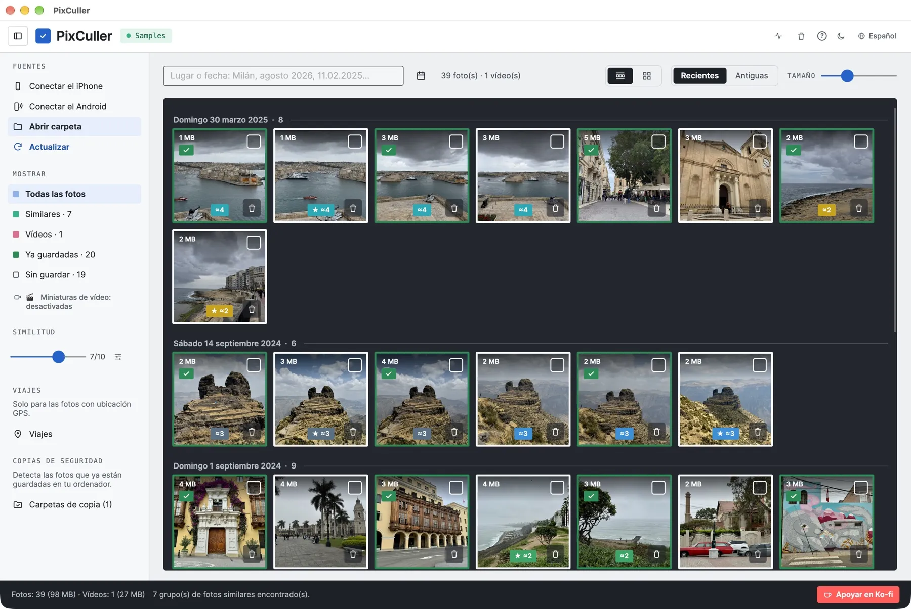
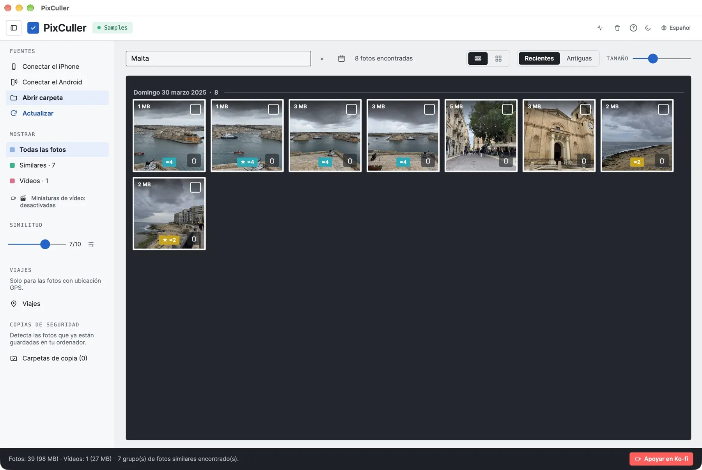

Ordena tu iPhone desde tu Mac o PC.
Conecta el cable. PixCuller encuentra duplicados y ráfagas, muestra las fotos parecidas una junto a otra y te deja borrar cientos de fotos en pocos clics. También funciona con Android.
Gratis · Sin cuenta · Tus fotos nunca salen de tu ordenador

Cómo funciona
Conecta
Conecta tu iPhone o teléfono Android con un cable USB. Nada que instalar en el teléfono, sin nube, sin cuenta.
Compara
Las fotos parecidas, los duplicados y las ráfagas se detectan por ti. Muestra hasta seis una junto a otra y quédate con la mejor.
Borra
Marca lo que ya no quieres y borra cientos de fotos de una vez, directamente en el teléfono.
Un vistazo a la app




Por qué PixCuller
Un error se puede deshacer
Por defecto, cada foto borrada se guarda 30 días en una carpeta de tu ordenador y puedes importarla de nuevo.
Nada sale de tu ordenador
Ninguna foto ni ubicación GPS se envía a ningún sitio. Sin cuenta, sin nube.
Pensado para ir rápido
Marca, arrastra, Ctrl/⌘+clic: selecciona cientos de fotos con unos pocos gestos.
¿Ya guardada? Lo ves
Añade tus carpetas de copia: las fotos que ya tienen una copia idéntica en tu ordenador se enmarcan en verde, así sabes lo que se puede borrar sin riesgo.
Busca por lugar o por fecha
«Milán», «agosto 2026», «11.02.2025»: escríbelo y encuentra las fotos, sin conexión, gracias a su GPS. Un botón de calendario filtra por periodo.
Día a día
La cuadrícula muestra una línea y una fecha por cada día, o se queda densa con la fecha al pasar el ratón y junto a la barra de desplazamiento.
Gratis, de verdad
Sin suscripción, sin compras integradas, sin cuenta.
PixCuller
0 $
Explora, compara, ordena y elimina, en un iPhone, un teléfono Android o una carpeta. Mac y Windows.
PixCuller funciona solo: ninguna otra app que comprar ni instalar.
Borra desde el ordenador
iPhone: basta un cable USB. Las fotos se borran directamente en el iPhone, sin pasar por « Eliminados recientemente ». Hace falta un PC con Windows 10/11 o un Mac con macOS 27 o posterior, con Fotos en iCloud desactivado en el iPhone.
Android: mismo principio, sin nada que instalar en el teléfono. PC con Windows 10/11 o Mac con macOS 27 o posterior.
Red de seguridad: por defecto, PixCuller guarda 30 días una copia de cada foto borrada en « PixCuller Trash » (carpeta Imágenes). En una carpeta del ordenador, los archivos van a la Papelera.
Además: tus fotos agrupadas por viaje, con el espacio que ocupa cada uno.
Guías para ordenar tus fotos en el ordenador
Cómo ordenar las fotos del iPhone en el Mac
Ordena miles de fotos del iPhone en tu Mac: qué hacen Fotos y Captura de Imagen, y una forma más rápida de agrupar, comparar y borrar.
Cómo ordenar las fotos del iPhone en un PC con Windows
Ordena miles de fotos del iPhone en Windows 10 u 11: qué muestran la app Fotos y el Explorador, y una forma más rápida de ordenar y borrar.
Cómo ordenar miles de fotos más rápido en un Mac o un PC
Por qué ordenar fotos en una pantalla grande es mucho más rápido que en el móvil, y un método sencillo para repasar miles de fotos en una sola sesión.
Cómo liberar espacio en el iPhone desde un Mac o un PC con Windows
Conecta tu iPhone, ordena fotos en una pantalla grande y borra lo que no necesitas, sin iCloud y sin enviar nada a internet.
Cómo comparar fotos parecidas y quedarte con la mejor
Una rutina sencilla para elegir la mejor toma entre fotos casi idénticas: en qué fijarte y cómo hacerlo rápido en una pantalla grande.
Cómo buscar fotos duplicadas y parecidas en un Mac
Encuentra copias exactas, ráfagas y tomas casi idénticas en las carpetas de tu Mac o en un disco externo, conserva la mejor y manda el resto a la Papelera.
Cómo buscar fotos duplicadas y parecidas en Windows 10 u 11
Encuentra copias exactas, ráfagas y tomas casi idénticas en tu PC o en un disco externo, conserva la mejor y manda el resto a la Papelera de reciclaje.
Cómo ordenar una carpeta enorme de fotos, o un disco externo entero
Copias antiguas, tarjetas de cámara, un disco externo lleno: un método sencillo para ordenar miles de fotos por viaje, quitar casi copias y conservar lo mejor.
Cómo ordenar las fotos de Android en un Mac
A un Mac siempre le ha costado leer los móviles Android por USB. Cómo ordenar miles de fotos de Android en un Mac con macOS 27 y borrar lo que no necesitas.
Cómo ordenar las fotos de Android en un PC con Windows
Ordena miles de fotos de Android en Windows 10 u 11: qué muestran el Explorador y la app Fotos, y una forma más rápida de agrupar y borrar.
Cómo liberar espacio en tu móvil Android desde un Mac o un PC
Conecta tu móvil Android por USB, ordena las fotos en una pantalla grande y borra lo que no necesitas, sin pagar Google One y sin subir nada.